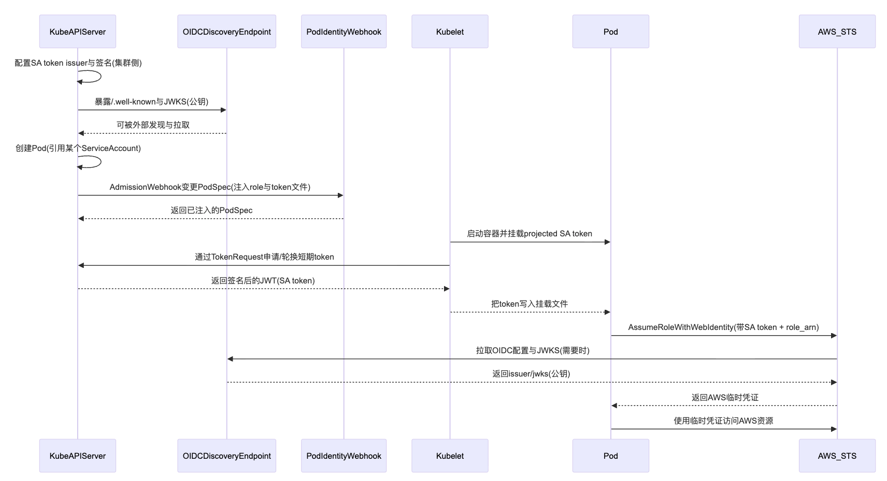

在 EKS 上给 Pod 绑 IAM Role：IRSA（ServiceAccount + OIDC）到底怎么回事
Posted on Sun 25 January 2026 in Kubernetes
| Abstract | 在 EKS 上实现 Pod 级 IAM Role 绑定（IRSA） |
|---|---|
| Authors | Walter Fan |
| Category | 云原生安全实践 |
| Status | v1.0 |
| Updated | 2026-01-25 |
| License | CC-BY-NC-ND 4.0 |
开篇：你给了 Pod “公司大门钥匙”，然后怪它手痒？
很多团队的第一版 EKS 权限管理是这样的：
- 给节点（EC2）绑一个 IAM Role（instance profile）
- 业务 Pod 跑上去之后，AWS SDK 自动就能调 S3、DynamoDB、Secrets Manager
这看起来很省事，像“公司统一发门禁卡”。但它有个尴尬的现实：同一台节点上的所有 Pod，理论上都能继承同一把钥匙。你本来只是想让 A 服务读一个 S3 前缀，结果 B 服务（甚至某个被攻破的 sidecar）也拿到了“顺手开门”的能力。
反直觉点在于：问题不在 IAM 写得不够细，而在“身份粒度”不对。
你把权限发给了“机器（Node）”，而不是“工作负载（Pod）”。机器是共享的，工作负载才是你真正想管的边界。
这篇文章我想帮你把 IRSA 讲透：它不是一个“更复杂的 IAM”，而是把凭证发放从“机器”换成“工作负载身份”。读完你会拿到三件东西：
- 能讲给同事听：ServiceAccount token、OIDC、Identity Provider、STS 这些词到底各干什么
- 能抄作业跑通：用
eksctl + YAML把一个 Pod 绑到一个 IAM Role，并验证sts get-caller-identity - 能快速定位问题：遇到 403/AccessDenied，知道从 SA、token、信任策略、注入变量、CloudTrail 哪儿下手
一句话版：IRSA 是怎么让 Pod “合法拿到钥匙”的？
一句话总结就是：
Pod 拿着 Kubernetes 发的短期 ServiceAccountToken（JWT），去 AWS STS 走
AssumeRoleWithWebIdentity换一张更短期的 AWS 临时凭证；AWS 用 OIDC 的规则去验证这个 JWT 是不是你这个集群、这个 ServiceAccount 发的。
这就叫 IRSA：IAM Roles for Service Accounts
IRSA 全称 IAM Roles for Service Accounts。你可以把它理解成一句很朴素的话：
把 AWS 的 IAM Role 绑定到 Kubernetes 的 ServiceAccount 上，让“用这个 SA 的 Pod”拿到属于自己的 AWS 临时凭证。
它跟“给节点绑 Node Role”最大的区别是：权限不再按机器发，而是按工作负载发。
为什么要 IRSA：因为 Node Role 太像“宿舍万能钥匙”
不做 IRSA 时，很多集群的默认姿势是：给节点（EC2）绑一个 IAM Role。它当然省事，但也很像你给整层楼发了一把万能钥匙，然后要求大家“自觉别乱开门”。
IRSA 至少解决了三件现实问题：
- 最小权限更可行：你可以把权限精确到某个 ServiceAccount（进而是某类 Pod），而不是一整台节点
- 凭证更安全：Pod 拿到的是 STS 的临时凭证，短期、自动轮换，避免把 AK/SK 硬编码进镜像/配置
- 审计更清晰：谁在用哪个角色访问 AWS 资源，更容易在 CloudTrail/日志里对号入座
接下来我们把这些关键词拆开讲清楚，再上实操。
二、先把几个词讲清楚：Pod、ServiceAccount、Token、OIDC、IdP、STS
我见过不少 IRSA 失败案例，本质不是“命令敲错了”，而是几个词混在一起，像把“身份证、工牌、门禁卡、临时访客证”全叫成“卡”，然后大家一起迷路。
0) Kubernetes 基础速通：控制面、数据面、以及“谁在什么时候插一脚”
如果你对 K8s 已经很熟，这一小节可以直接跳过；但我建议你至少扫一眼，因为 IRSA 的很多“玄学问题”其实都发生在这几个人之间。
- 控制面（Control Plane）：可以理解成“公司人事 + 门禁系统 + 排班系统”的总和
- kube-apiserver：所有请求的大门口（kubectl、controller、kubelet 都要来这里办事）
- etcd：集群的“户口本”，对象最终都落在这里
- scheduler：负责“这个 Pod 去哪台节点上班”
-
controller-manager：各种控制器，负责把“期望状态”往“现实状态”上推
-
数据面（Data Plane）：就是“真正干活的一线员工”
- kubelet：节点上的班长，负责拉镜像、起容器、挂载卷、申请/轮换 token
- CNI/网络插件：负责让 Pod 能互相说话、能出公网
-
容器运行时：containerd / CRI-O 之类，负责把容器跑起来
-
Namespace：你可以当成“部门”。同名的 ServiceAccount 在不同 namespace 是两个人。
-
ServiceAccount（SA）：你可以当成“工牌号”。它本身不等于权限，但它能和权限绑定。
-
RBAC（Role/RoleBinding）：这是 K8s 内部权限体系：决定“这个工牌能不能在集群里办某件事”。
注意：RBAC 不会直接影响你能不能调 AWS API，那是另一套故事（IRSA）。 -
Admission Webhook：可以理解成“入职体检”。Pod 真正被写入 etcd 之前，会有一轮“检查/变更”。
amazon-eks-pod-identity-webhook就是这种角色：它会在 PodSpec 上偷偷塞几样东西（比如环境变量、volume），让 AWS SDK 后面能自动工作。
把这些角色放在心里，你后面看时序图会顺很多：apiserver 负责“准入”，kubelet 负责“落地执行”，webhook 负责“加工 PodSpec”。
1) Pod：真正去调 AWS API 的“那个人”
Pod 是 Kubernetes 的调度单位，但你要记住一件事：
- AWS 不认识 Pod
- AWS 只认识“某个请求携带的凭证”
所以 IRSA 的本质不是“给 Pod 发权限”，而是：让 Pod 里的进程（AWS SDK / aws cli）能拿到一份只属于它的临时凭证。
2) ServiceAccount（SA）：Pod 的“身份名片”（K8s 世界里用）
ServiceAccount 是 Kubernetes 里的身份对象，主要用来做两件事：
- 集群内权限：配合 RBAC，决定这个 Pod 能不能
get/list/watch某些 K8s 资源 - 集群外联邦：当你把 SA token 拿去和外部系统（比如 AWS）做身份联邦时，它就成了“身份声明的载体”
IRSA 里最关键的一点是：AWS 最终是按 SA 来区分“谁能换到哪一个 IAM Role”。
3) ServiceAccountToken：不是“永不过期的钥匙”，而是“会轮换的短期 JWT”
你在很多老文章里会看到“ServiceAccount token 存在一个 Secret 里”。那是旧模式，隐患也很直观：长期有效、容易被拷走、撤销成本高。
IRSA 依赖的是更现代的做法：Projected ServiceAccountToken（短期、可设置 audience、会轮换）。你可以把它理解成：
- JWT（JSON Web Token）：一段带签名的字符串，里面写着“我是谁、从哪来、给谁用、什么时候过期”
- 短期：过期了就得换新的（由 kubelet / apiserver 发放与轮换）
这个 token 里有几个字段，你后面排错会经常用到：
iss（issuer）：谁签发的（对应你的集群 OIDC issuer URL）sub（subject）：我是谁（通常形如system:serviceaccount:<namespace>:<serviceaccount>）aud（audience）：给谁用（IRSA 场景里常见是sts.amazonaws.com）
你可以把它当成“访客证”：上面写了公司（iss）、姓名/部门（sub）、要去的会议室（aud）、有效期（exp）。
4) OIDC：一套“外部怎么验证这个 JWT 是真的”的标准流程
OIDC（OpenID Connect）在这里你不用背规范，把它当成三件事就够了：
- Issuer：一个 URL，告诉大家“token 的发行方是谁”
- Discovery：在
/.well-known/openid-configuration这个路径上，别人能发现 issuer 的各种信息（尤其是jwks_uri） - JWKS（公钥集合）：在
jwks_uri上，别人能拿到用于验签的公钥（通常带kid）
也就是说：AWS 不需要“相信你的人品”，它只需要能按 OIDC 的规则验证 token 的签名与声明。
5) Identity Provider（IdP）：在 IRSA 里，“IdP 指的是你的集群”
这句话很多人会绕：不是 AWS 是 IdP，也不是你的应用是 IdP。
在 IRSA 语境下：
- Kubernetes/EKS 暴露 OIDC issuer + JWKS（它能签 token，也能让外部验证）
- AWS IAM 里创建一个 OIDC Provider，指向这个 issuer（相当于告诉 AWS：“以后看到这个 issuer 的 token，就按这个规则验”）
所以“Identity Provider”指的是Kubernetes 集群这个身份发行方；AWS 是“依赖方/验证方”（relying party/verifier）。
6) STS：把“身份声明”换成“可用的 AWS 临时凭证”
应用最终需要的不是 JWT，而是 AWS API 能用的临时凭证（AccessKeyId/SecretAccessKey/SessionToken）。
所以 IRSA 最关键的 API 是：
AssumeRoleWithWebIdentity：你拿着 web identity token（SA token）来，STS 验证 OK 后，给你一份短期 AWS 凭证
到这一步，AWS SDK 的默认凭证链就能工作了：它会从环境变量/文件里拿到 token 与 role arn，自动去 STS 换凭证并缓存刷新。
三、IRSA 的工作原理
- kube-apiserver 不会“上传公钥给 AWS”，它是暴露 OIDC discovery/JWKS 端点，AWS 需要时去拉
- token 的轮换不是“写死一个 secret”，而是基于 TokenRequest + projected token 的短期发放与轮换
简化的时序图如下： 
sequenceDiagram
participant KubeAPIServer as KubeAPIServer
participant OIDCDiscovery as OIDCDiscoveryEndpoint
participant PodIdentityWebhook as PodIdentityWebhook
participant Kubelet as Kubelet
participant Pod as Pod
participant AWSSTS as AWS_STS
KubeAPIServer->>KubeAPIServer: 配置SA token issuer与签名(集群侧)
KubeAPIServer->>OIDCDiscovery: 暴露/.well-known与JWKS(公钥)
OIDCDiscovery-->>KubeAPIServer: 可被外部发现与拉取
KubeAPIServer->>KubeAPIServer: 创建Pod(引用某个ServiceAccount)
KubeAPIServer->>PodIdentityWebhook: AdmissionWebhook变更PodSpec(注入role与token文件)
PodIdentityWebhook-->>KubeAPIServer: 返回已注入的PodSpec
Kubelet->>Pod: 启动容器并挂载projected SA token
Kubelet->>KubeAPIServer: 通过TokenRequest申请/轮换短期token
KubeAPIServer-->>Kubelet: 返回签名后的JWT(SA token)
Kubelet-->>Pod: 把token写入挂载文件
Pod->>AWSSTS: AssumeRoleWithWebIdentity(带SA token + role_arn)
AWSSTS->>OIDCDiscovery: 拉取OIDC配置与JWKS(需要时)
OIDCDiscovery-->>AWSSTS: 返回issuer/jwks(公钥)
AWSSTS-->>Pod: 返回AWS临时凭证
Pod->>AWSSTS: 使用临时凭证访问AWS资源
把这个图翻译成人话，就是四句话：
- K8s 集群会签发短期的 SA token（JWT），并提供“别人如何验它”的公钥与 discovery 信息
- PodIdentityWebhook 负责“把需要的材料塞进 Pod”（常见是
AWS_ROLE_ARN和AWS_WEB_IDENTITY_TOKEN_FILE，以及投影 token 的 volume） - Pod 里 AWS SDK 看到这些材料，就会去 STS 换临时凭证
- STS 通过 OIDC discovery/JWKS 去验签，验过了才发临时凭证
四、实操：eksctl + YAML 一次跑通（含验证）
下面这套步骤我尽量写得“能复制就跑”，并且每一步都告诉你：跑完你应该看到什么。
Step 0：前置检查（别在第一步就掉坑里）
- 你有一个 EKS 集群（
kubectl能连上） - 你的工作机上有：
awsCLI、eksctl、kubectl - 你的 Pod 里使用的 AWS SDK /
awsCLI 走默认凭证链（不要在镜像里硬编码 AK/SK）
Step 1：关联集群的 OIDC Provider（一次性）
eksctl utils associate-iam-oidc-provider --cluster <clusterName> --approve
你可以把这一步理解成：在 AWS IAM 里登记“这个集群是一个 OIDC 身份发行方”。
Step 2：准备一个最小权限的 IAM Policy（例：只读某个 S3 前缀）
示例（请把 <bucket> 和 <prefix> 替换成你自己的）：
{
"Version": "2012-10-17",
"Statement": [
{
"Sid": "ListBucketPrefix",
"Effect": "Allow",
"Action": ["s3:ListBucket"],
"Resource": ["arn:aws:s3:::<bucket>"],
"Condition": {
"StringLike": {
"s3:prefix": ["<prefix>/*"]
}
}
},
{
"Sid": "GetObjects",
"Effect": "Allow",
"Action": ["s3:GetObject"],
"Resource": ["arn:aws:s3:::<bucket>/<prefix>/*"]
}
]
}
然后用 AWS CLI 创建（你也可以用现有的 policy arn，下面只是给一个“闭环演示”）：
# 先把上面的 JSON 保存为 policy.json
aws iam create-policy \
--policy-name demo-irsa-s3-read \
--policy-document file://policy.json
Step 3：用 eksctl 创建“带 IAM Role 的 ServiceAccount”
这一步最省心：它会帮你把 IAM Role、信任策略、以及 K8s ServiceAccount 注解一起搞定。
eksctl create iamserviceaccount \
--cluster <clusterName> \
--namespace demo \
--name s3-reader \
--attach-policy-arn arn:aws:iam::<accountId>:policy/demo-irsa-s3-read \
--approve
如果你想真正搞懂 IRSA（以及后面排错不抓瞎），建议你至少看一眼“信任策略（trust policy）”长什么样。核心就两点：
- Principal 是 OIDC provider（对应这个 EKS 集群的 issuer）
- Condition 把范围锁死到某个 SA（sub）+ 某个 audience（aud）
一个典型的 trust policy（示例，字段以你实际 region/oidc id 为准）大概是这样：
{
"Version": "2012-10-17",
"Statement": [
{
"Effect": "Allow",
"Principal": {
"Federated": "arn:aws:iam::<accountId>:oidc-provider/oidc.eks.<region>.amazonaws.com/id/<oidcId>"
},
"Action": "sts:AssumeRoleWithWebIdentity",
"Condition": {
"StringEquals": {
"oidc.eks.<region>.amazonaws.com/id/<oidcId>:sub": "system:serviceaccount:demo:s3-reader",
"oidc.eks.<region>.amazonaws.com/id/<oidcId>:aud": "sts.amazonaws.com"
}
}
}
]
}
你可以用下面这个命令拿到集群的 issuer（也就是上面 oidc.eks.../id/<oidcId> 那段的来源）：
aws eks describe-cluster \
--name <clusterName> \
--query "cluster.identity.oidc.issuer" \
--output text
跑完你应该能看到：
demonamespace 里有一个s3-reader的 ServiceAccount- 这个 SA 上有类似下面的注解（Role ARN 以你实际为准）：
metadata:
annotations:
eks.amazonaws.com/role-arn: arn:aws:iam::<accountId>:role/<roleName>
Step 4：Deployment 指定 serviceAccountName（YAML）
下面用 amazon/aws-cli 做演示，进 Pod 后直接跑 aws sts get-caller-identity。
apiVersion: apps/v1
kind: Deployment
metadata:
name: irsa-demo
namespace: demo
spec:
replicas: 1
selector:
matchLabels:
app: irsa-demo
template:
metadata:
labels:
app: irsa-demo
spec:
serviceAccountName: s3-reader
containers:
- name: awscli
image: public.ecr.aws/aws-cli/aws-cli:2
command: ["sh", "-c"]
args: ["sleep 36000"]
应用：
kubectl create namespace demo
kubectl apply -f irsa-demo.yaml
说明：
kubectl create namespace demo如果已经存在会报错，忽略即可。
Step 5：确认注入是否生效（关键观测点）
如果集群里安装了 IRSA 所需的 webhook（常见就是 amazon-eks-pod-identity-webhook，也可能以 EKS add-on 形式存在），你的 Pod 里一般会看到：
AWS_ROLE_ARNAWS_WEB_IDENTITY_TOKEN_FILE（通常指向一个挂载文件，例如/var/run/secrets/eks.amazonaws.com/serviceaccount/token）
你可以这样看：
kubectl -n demo exec deploy/irsa-demo -- env | grep AWS_
kubectl -n demo exec deploy/irsa-demo -- ls -l /var/run/secrets/eks.amazonaws.com/serviceaccount || true
如果你没看到这些变量/文件，先别急着怪 IAM，多半是“注入链路”没通，后面排错清单会讲怎么定位。
Step 6：验证：看调用者到底是谁
kubectl -n demo exec deploy/irsa-demo -- aws sts get-caller-identity
你期望看到的结果是：Arn 指向你给这个 SA 绑定的那个 role（而不是节点 role）。
五、常见坑与排错清单：IRSA 403/AccessDenied 的“高频原因”
我把排错按“从近到远”排了一下：先看 Pod 里有没有材料，再看 IAM 是否愿意信你。
1) Pod 没用到你想要的 ServiceAccount
- 现象：你明明建了
s3-reader，但 Pod 还是拿到节点 role 或者直接没权限 - 排查：
kubectl -n demo get pod -l app=irsa-demo -o jsonpath='{.items[0].spec.serviceAccountName}{"\n"}'
kubectl -n demo get sa s3-reader -o yaml
2) 没有注入 AWS_ROLE_ARN / AWS_WEB_IDENTITY_TOKEN_FILE
- 现象：Pod 里看不到环境变量；AWS SDK 走不到 web identity 这条链
- 排查：先确认你集群里是否安装了
amazon-eks-pod-identity-webhook（或对应 add-on），以及它是否对该 namespace 生效
kubectl -n demo exec deploy/irsa-demo -- env | grep AWS_
备注：即便没有 webhook，你也可以手动在 Pod spec 里挂 projected token 并设置 env，但那就从“抄作业”变成“手搓器械体操”了。多数团队的最佳实践还是让 webhook 来做注入。
3) IAM Role 的 trust policy 条件写错（最常见）
IRSA 的信任策略里通常会写两类关键条件（概念上）：
sub匹配：绑定到system:serviceaccount:<ns>:<sa>这个身份aud匹配：要求 audience 是sts.amazonaws.com
只要你 namespace 或 serviceaccount 名字对不上，STS 就会拒绝。
4) OIDC provider 没建好 / 建到别的集群
- 现象：STS 报 token issuer 不可信，或者无法找到对应 OIDC provider
- 排查：回到 Step 1，确认集群确实关联过 OIDC provider（很多人“以为做过”，其实在另一个 AWS profile 上做过）
5) 你其实拿到了临时凭证，但 policy 不允许
- 现象：
sts get-caller-identity成功，但访问 S3/Secrets Manager 仍然AccessDenied - 排查：
- 先看 CallerIdentity 的 Arn 是不是你期望的 role
- 再看 IAM policy 是否真的覆盖到目标资源 ARN（S3 的 bucket/object ARN 很容易写漏）
6) CloudTrail：当你在黑屋里摸墙时，它就是手电筒
当你看到 STS 或目标服务拒绝请求时，CloudTrail 里通常能看到更明确的失败原因（尤其是 AssumeRoleWithWebIdentity 相关事件）。排错时别只在 K8s 里打转。
六、2026 该怎么选：IRSA vs EKS Pod Identity（点到为止）
你这篇主线是 IRSA，我也建议绝大多数团队先把 IRSA 跑顺：资料多、生态成熟、思路清晰。
但你应该知道还有一个选择：EKS Pod Identity。
我用一句话概括差别（不展开）：
- IRSA：靠 OIDC + IAM trust policy 把角色绑定到“某个集群的某个 SA”（信任关系更“写死”在 IAM 里）
- EKS Pod Identity：更偏“由 EKS 提供的机制/agent 来做绑定与发放”，减少你手写 OIDC/trust 的心智负担
如果你要多集群复用同一套角色、或者希望降低 OIDC 相关配置的复杂度，可以把 Pod Identity 当作下一步选项（AWS 官方文档里有更完整对比与迁移思路）。
TL;DR（给只想抄结论的人）
- 别把权限绑在 Node Role 上当万能钥匙：那是“方便”，不是“安全”
- IRSA 的核心：Pod 用 短期 SA token（JWT） 走 OIDC 联邦去 STS 换临时凭证
- 你排错的抓手：Pod 里有没有
AWS_ROLE_ARN/AWS_WEB_IDENTITY_TOKEN_FILE，CallerIdentity 是谁，trust policy 的sub/aud是否匹配
可执行清单（Checklist）
- [ ] 集群已关联 OIDC provider：
eksctl utils associate-iam-oidc-provider ... --approve - [ ] 用
eksctl create iamserviceaccount创建 SA+Role 并挂上最小权限 policy - [ ] Deployment 指定
serviceAccountName - [ ] Pod 内验证
aws sts get-caller-identity，确认 Arn 是目标 role - [ ] 访问目标 AWS 资源做一次“最小权限验证”（读 S3 前缀/读某个 secret）
- [ ] 出问题按顺序排查：SA -> env/token -> trust policy -> OIDC provider -> policy 资源 ARN
你可能会想问
你现在的集群里，最想先“拆掉 Node 万能钥匙”的是哪一类权限？S3/Secrets Manager/DynamoDB 还是别的？我可以按你实际资源（比如某个 secret 的 ARN、某个 bucket 前缀）把最小权限 policy 模板再收敛一版。
Reference
- AWS Blog: Introducing fine-grained IAM roles for service accounts
- Kubernetes 文档: Configure service accounts for pods
- GitHub: amazon-eks-pod-identity-webhook
- AWS EKS 文档: IAM roles for service accounts
- AWS EKS 文档: Learn how EKS Pod Identity grants pods access to AWS services
本作品采用知识共享署名-非商业性使用-禁止演绎 4.0 国际许可协议进行许可。